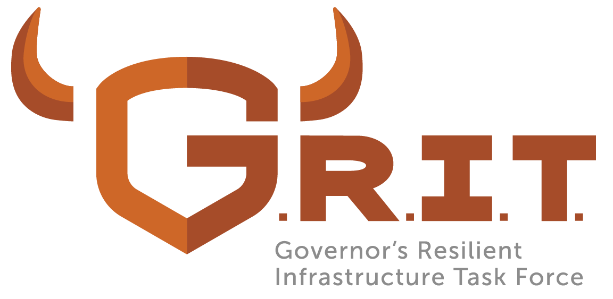

GRIT unites the people who plan, operate and protect South Dakota's critical infrastructure — and helps every family and community get ready for whatever comes next.

Est. 2025 · Executive Order 2025-06Whether you're here to learn, prepare or get involved, start wherever makes sense for you.
See the four systems South Dakota depends on — energy, water, transportation and communications — and how they connect.
Explore Critical Lifelines →Start with a 72-hour kit, a family communication plan, and seasonal checklists built for South Dakota conditions.
Get Prepared →See who's behind GRIT, how it was formed, and the mission driving the work forward.
About GRIT →Is your family ready for a South Dakota winter storm? Get the seasonal checklist before the first snow flies.
“To strengthen South Dakota's resilience by uniting the people who plan, operate and protect our critical infrastructure — assessing risk, guiding smart investment, and preparing our state to respond to disruption with determination, resilience and grit.”